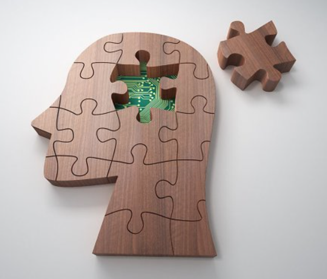
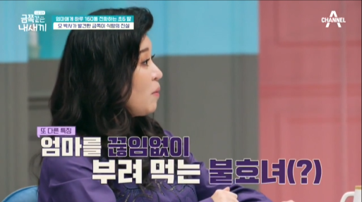

1. 초등학교 6학년인 늦둥이 딸을 둔 엄마
오은영 박사님을 만나고 싶다는 금쪽이의 부탁에 방송 출연을 결심했다는 엄마는 딸의 집착이 너무 심해 "엉켜있다"는 느낌까지 든다며 조심스레 고민을 털어놓는다. 출근한 엄마에게 쉴새 없이 전화를 걸어 빨리 오라 재촉하는 금쪽이의 모습이 보이고, 엄마는 많을 때는 160통까지도 전화가 온다고 밝혀 놀라움을 안긴다.
잠자리에서 아이처럼 칭얼대는 금쪽이의 모습이 보인다. 이유를 알 수 없는 금쪽이의 잠투정은 계속되고, 결국엔 잠이 오지 않는다며 태블릿PC를 요구하는 금쪽이와 말리는 엄마 사이에 실랑이까지 벌어진다. 그리고 2시간 후, 야심한 시각 금쪽이의 흐느끼는 소리가 들린다. 엄마를 붙잡고 무섭다며 "다 없어질 것 같아", "엄마, 죽지 마"라는 알 수 없는 말을 내뱉는 금쪽이의 모습에 출연진들은 의문스러운 표정을 숨기지 못한다.
2. 심각한 표정으로 금쪽이를 관찰
오은영은 "아이가 고통스러워한다"며 "금쪽이가 엄마가 잠드는 것에 공포를 가지고 있는 것 같다"는 의견을 내비친다. 결국 엄마는 오열하며 금쪽이가 보는 앞에서 극단적 선택을 했던 이야기를 어렵게 털어놓는다. 오은영은 금쪽이가 충격적인 일을 겪은 뒤 발생할 수 있는 '외상 후 스트레스 장애(PTSD)'를 앓고 있다고 판단한다. 오은영은 의학적 치료가 큰 도움이 된다며 적극적 치료를 권함과 동시에 엄마에게도 당시 상황에 대해 금쪽이와 터놓고 이야기 나눠야 한다고 강조한다.
출처 : monamie@osen.co.kr

엄마에게 음식을 요구하여 잠시도 입을 쉬지도 않고 끊임없이 음식을 계속 먹기만 하는 금쪽이에 대한 오해
오은영은 “금쪽이가 배가 고파서 계속 음식을 먹는 것은 수시로 음식을 입에 넣어가면서 불안해진 마음을 안정시키고 위로받고자하는 행동이며, 불안정 애착 중 집착형이다”라고 분석한다. 밝힌다.
금쪽이가 보는 앞에서 극단적 선택을 했던 엄마에 대한 무서운 순간의 불안과 두려움보다 더 심각해진 공포스러움으로 들아간다. 엄마와 금쪽이는 그때의 상황에 대해 이야기를 나누고 이해하고 서로의 마음을 받아들이기 위한 시간을 갖도록 하였다.
출처: https://think-sis.tistory.com/4 [가족아동컨설팅]